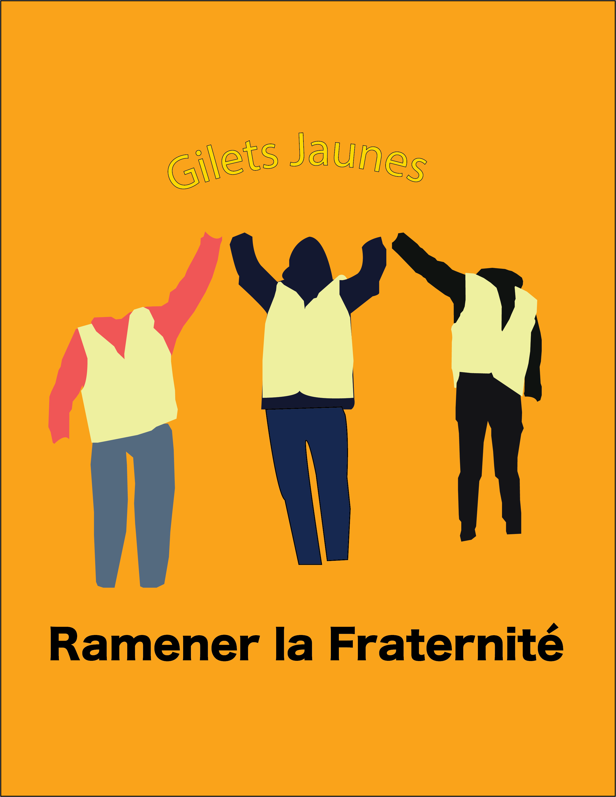

I made my idea of a symbol for the Gilet Jaunes or the Yellow Vests. My poster was focused around what I thought would be a good motto for the activist group. Coming from the French motto "Liberté, égalité, fraternité" I produced “ramener la fraternité” meaning bring back fraternity. I chose this because the Gilet Jaunes believe that their country has lost its unity with immigrants coming from all parts of the world and taxes on the rise, France is just not what it used to be. The population has lost connection with itself and each other. The old motto "Liberté, égalité, fraternité" meaning “Liberty, Equality, Fraternity” has lost some of its original meaning in France. While the country has partially maintained the practices of Liberty and Equality, it has lost the Fraternity or Brotherhood that it once had. With such a vast population and a large variety of ideals it is hard to hear the voice of France as a whole. The Gilet Jaunes see this and are fighting it trying to bring back the old meaning of Fraternité. They believe it is important for France to be unified as a Country and as a People. In my poster I took the idea of unity to heart.
The individuals depicted are intended to show unity as idealized by the GIlet Jaunes. I chose not to include the faces and hands of the individuals to show that the movement is not led by a specific individual but rather is lead by its members originally organized online. In contrast, I chose to make each of them their own. I gave them clothing and stances intended to express that while the group is not lead by any individuals it is comprised of individuals of unique background with different ages and professions. However ,if I had included skin color one would notice all would be white. Additionally ,to show the unity of the group I depicted them with their hands clasped bound together in there fight. Another symbol of unity was there vests, as likely noticed, they are all wearing them however to show their intents of coming together they were all exhibited wearing the same exact color vests, the belief being that while they are all from different backgrounds wearing different clothing when they put on the vests they become one. This art manifests the ideas of unity feeling the minds of the GIlet Jaunes and is meant to show it in a symbolic and narrative approach.
This poster designed to show the ideas and intent behind the group known as the Gilet Jaunes. They are fighting for what they believe in and truly making change in their ways. Lots of the activism this group practice is based in art, usually street art, and I think with my interpretations of the group this poster would fit in with there's. The Gilet Jaunes are activists and will continue strong. Lead not by a leader but by ideas their voice can be heard loud and clear, “bring back Fraternité”.